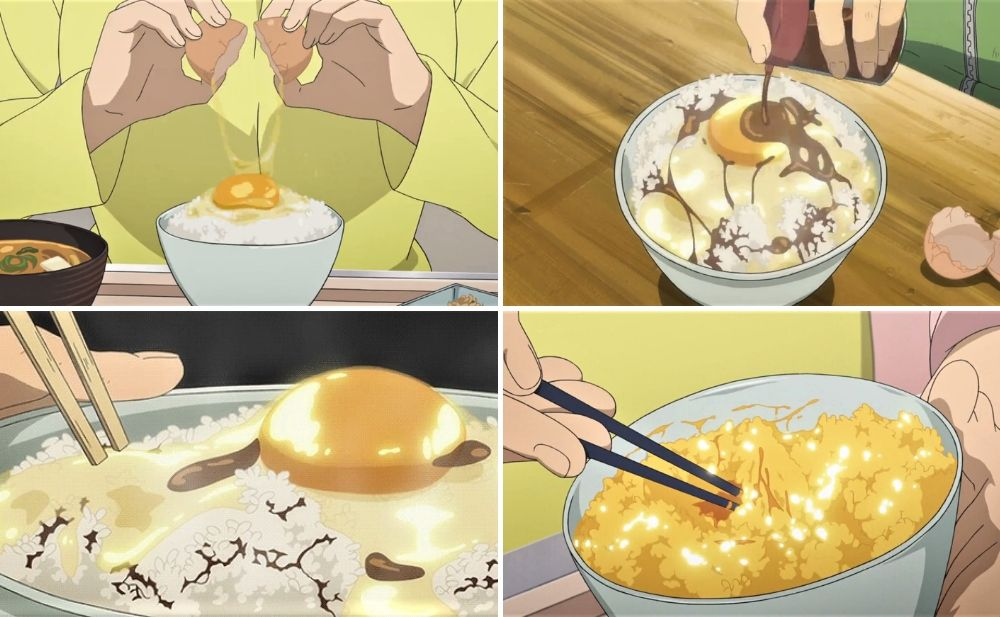
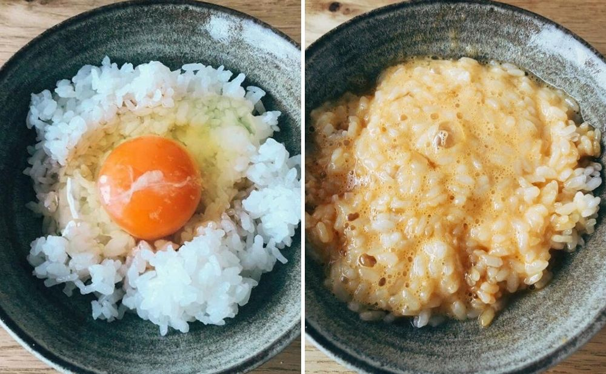

Tamago Kake Gohan – Silver Spoon

Tamago Kake Gohan, also known as “Eggs on Rice”, is
exactly what its name suggests. You only need to know how to steam a bowl
of rice and crack a raw egg without leaving eggshells behind.

Ingredients:
- 1 pasteurised egg
- 1 bowl of rice
- Soy sauce
Steps:
- Prepare a bowl of rice.
- Crack the egg on top of the rice.
- Drizzle with soy sauce.
- Mix well.